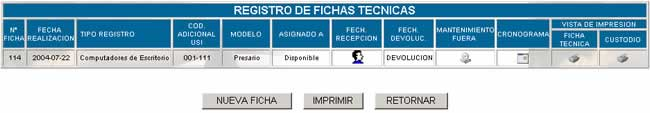
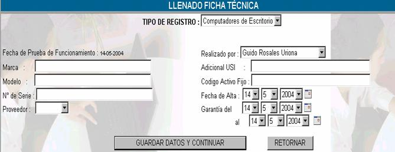
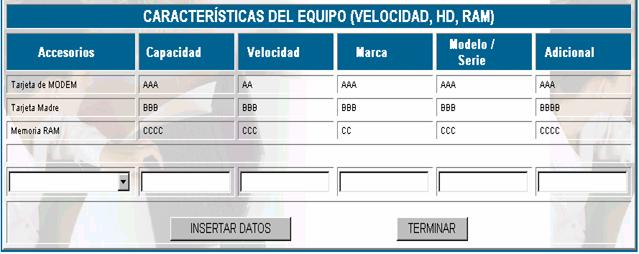
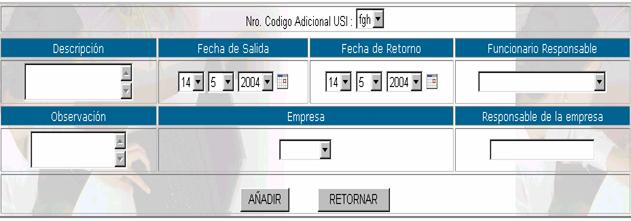
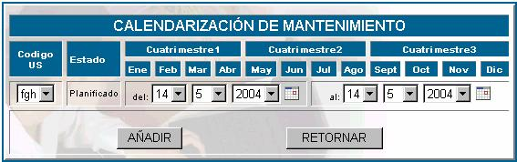

FICHAS TÉCNICAS
Las fichas técnicas se llenan para describir
los recursos informáticos en términos técnicos, la pantalla principal de esta
opción es la siguiente.

Donde:
N° Ficha; es el número de ficha técnica asignada
automáticamente por el sistema.
Fecha de
realización; especifica la fecha de
registro de la ficha técnica
Tipo de
registro; especifica el tipo de
recurso que se está registrando.
Modelo; especifica el modelo del recurso del cual se realizó
la ficha técnica
Asignado a; especifica el
nombre de la persona asignada a realizar la ficha técnica.
Fecha de
recepción; especifica la fecha de
recepción del recurso. Cuando aparece el icono  indica que está disponible y puede
ser asignado.
indica que está disponible y puede
ser asignado.
Nueva ficha; para crear una nueva ficha técnica se deben llenar
los datos de la pantalla que aparece a continuación.

Tipo de registro; se refiere a la clase de recurso que se está
registrando, éste puede ser: Computadoras de Escritorio, Servidores, Computadoras
portátiles u otro.
Marca; se refiere a la marca de los recursos que se están
adquiriendo
Modelo; se debe especificar el modelo del recurso que se
está registrando
N° de Serie; establecer el número de serie del recurso que se
está registrando.
Proveedor; usted puede elegir un proveedor solamente de los
registrados en la parte de Gestión- proveedores
Realizado por; indicar el nombre del empleado quien está realizando
el registro del recurso.
Adicional USI; en esta
casilla usted debe poner el código de activo adicional.
Fecha de Alta; fecha en la que el equipo se puso en funcionamiento.
Garantía del / al; fecha de
inicio y de final de la garantía.
Presione GUARDAR
Y CONTINUAR y le aparecerá la siguiente pantalla.

Accesorios; se puede seleccionar el tipo de accesorio del cual
se quiere realizar la descripción
Capacidad; inserte la capacidad del accesorio al cual hizo
referencia
Velocidad; inserte
la velocidad del accesorio, añadiendo también su medida por ejemplo Mhz.
Marca; inserte la marca o
el nombre de la compañía creadora del accesorio.
Modelo / Serie; inserte
el modelo y la serie del accesorio, incluyendo características.
Adicional; inserte alguna descripción adicional, o algún
aspecto que no se tomó en cuenta.
Presione INSERTAR DATOS para
registrar la descripción de los accesorios y TERMINAR para volver
a la ficha técnica.
Fecha de devolución; si es necesario realizar la devolución de un recurso, debido
posiblemente a fallas entonces para registrar esta transacción haga click en y presione GUARDAR
para registrar la devolución.
Mantenimiento fuera; a veces es necesario realizar el mantenimiento de un
recurso informático fuera de las instalaciones de la empresa, para realizar
esta transacción haga click en y llene la siguiente
pantalla.

Nro Codigo adicional USI; usted puede escoger entre los códigos USI que asignó
anteriormente en el momento del registro de la ficha técnica.
Descripción; realice una descripción detallada especificando por
qué se realiza el mantenimiento fuera de la empresa.
Fecha de salida; especifique en qué día salió el recurso de la
empresa.
Fecha de retorno; especifique también el día que tiene que volver el
recurso a la empresa.
Funcionario responsable; anote el nombre de la persona que se hará cargo de
cualquier situación que pueda ocurrir con el recurso.
Observación; anote las observaciones que usted considere
pertinentes, especialmente si los días que el recurso se encuentra fuera de la
empresa son muchos.
Empresa; usted puede escoger la empresa, solamente un nombre
de algún proveedor registrado.
Responsable de la empresa; anote el nombre del responsable de la empresa de
mantenimiento sobre la cual se realizará la transacción.
Presione AÑADIR una vez
llenados estos datos
Cronograma; como lo establece el manual de procedimientos de la
empresa se debe realizar el mantenimiento de los equipos de forma planificada,
entonces para este propósito presione  y le aparecerá la siguiente pantalla
y le aparecerá la siguiente pantalla

Codigo;
escoja el código USI del recurso al cual se dará mantenimiento
Estado; como se está realizando la planificación en la fecha del sistema aparece
Planificado, en el momento de la planificación, luego será realizado en el
momento de la fecha prevista.
Del – al; se coloca las fechas de inicio y finalización del
mantenimiento.
Vista de impresión: Usted podrá obtener un reporte de la ficha técnica
con todos sus detalles y el custodio, haciendo click
en el icono  correspondiente.
correspondiente.
Imprimir: Usted podrá obtener un reporte de la lista completa
de fichas técnicas.